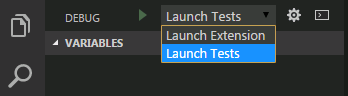
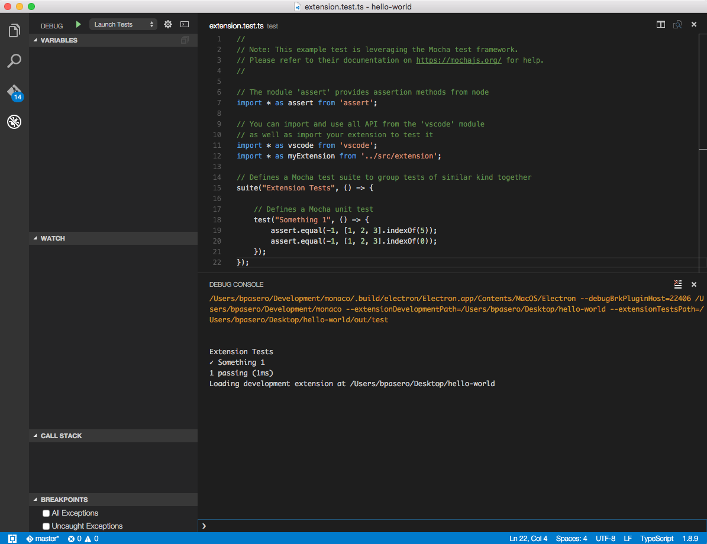

<!DOCTYPE HTML>
<html lang="zh-hans" >
    <head>
        <meta charset="UTF-8">
        <meta content="text/html; charset=utf-8" http-equiv="Content-Type">
        <title>测试-扩展 · vscode-docs</title>
        <meta http-equiv="X-UA-Compatible" content="IE=edge" />
        <meta name="description" content="">
        <meta name="generator" content="GitBook 3.2.3">
        <meta name="author" content="VSCodeContributorsinChina">
        
        
    
    <link rel="stylesheet" href="../../gitbook/style.css">

    
            
                
                <link rel="stylesheet" href="../../gitbook/gitbook-plugin-search-pro/search.css">
                
            
                
                <link rel="stylesheet" href="../../gitbook/gitbook-plugin-intopic-toc/style.css">
                
            
                
                <link rel="stylesheet" href="../../gitbook/gitbook-plugin-highlight/website.css">
                
            
                
                <link rel="stylesheet" href="../../gitbook/gitbook-plugin-fontsettings/website.css">
                
            
        

    

    
        
    
        
    
        
    
        
    
        
    
        
    

        
    
    
    <meta name="HandheldFriendly" content="true"/>
    <meta name="viewport" content="width=device-width, initial-scale=1, user-scalable=no">
    <meta name="apple-mobile-web-app-capable" content="yes">
    <meta name="apple-mobile-web-app-status-bar-style" content="black">
    <link rel="apple-touch-icon-precomposed" sizes="152x152" href="../../gitbook/images/apple-touch-icon-precomposed-152.png">
    <link rel="shortcut icon" href="../../gitbook/images/favicon.ico" type="image/x-icon">

    
    <link rel="next" href="用我们的方法创造扩展.html" />
    
    
    <link rel="prev" href="范式-原则.html" />
    

    </head>
    <body>
        
<div class="book">
    <div class="book-summary">
        
            
<div id="book-search-input" role="search">
    <input type="text" placeholder="输入并搜索" />
</div>

            
                <nav role="navigation">
                


<ul class="summary">
    
    

    

    
        
        
    
        <li class="chapter " data-level="1.1" data-path="../../">
            
                <a href="../../">
            
                    
                    简介
            
                </a>
            

            
        </li>
    
        <li class="chapter " data-level="1.2" >
            
                <a target="_blank" href="https://code.visualstudio.com/docs">
            
                    
                    官方文档
            
                </a>
            

            
        </li>
    
        <li class="chapter " data-level="1.3" data-path="../Overview.html">
            
                <a href="../Overview.html">
            
                    
                    概览
            
                </a>
            

            
        </li>
    
        <li class="chapter " data-level="1.4" data-path="../快速入门.md">
            
                <span>
            
                    
                    快速入门(暂无)
            
                </a>
            

            
            <ul class="articles">
                
    
        <li class="chapter " data-level="1.4.1" data-path="../快速入门/介绍视频.html">
            
                <a href="../快速入门/介绍视频.html">
            
                    
                    视频介绍
            
                </a>
            

            
        </li>
    
        <li class="chapter " data-level="1.4.2" data-path="../快速入门/小技巧.html">
            
                <a href="../快速入门/小技巧.html">
            
                    
                    小技巧
            
                </a>
            

            
        </li>
    
        <li class="chapter " data-level="1.4.3" data-path="../快速入门/用户接口.html">
            
                <a href="../快速入门/用户接口.html">
            
                    
                    用户接口
            
                </a>
            

            
        </li>
    
        <li class="chapter " data-level="1.4.4" data-path="../快速入门/主题.html">
            
                <a href="../快速入门/主题.html">
            
                    
                    主题
            
                </a>
            

            
        </li>
    
        <li class="chapter " data-level="1.4.5" data-path="../快速入门/设置.html">
            
                <a href="../快速入门/设置.html">
            
                    
                    设置
            
                </a>
            

            
        </li>
    
        <li class="chapter " data-level="1.4.6" data-path="../快速入门/快捷键绑定.html">
            
                <a href="../快速入门/快捷键绑定.html">
            
                    
                    快捷键绑定
            
                </a>
            

            
        </li>
    
        <li class="chapter " data-level="1.4.7" data-path="../快速入门/语言区域.html">
            
                <a href="../快速入门/语言区域.html">
            
                    
                    语言区域
            
                </a>
            

            
        </li>
    

            </ul>
            
        </li>
    
        <li class="chapter " data-level="1.5" data-path="../../summary/编辑器.html">
            
                <a href="../../summary/编辑器.html">
            
                    
                    编辑器
            
                </a>
            

            
            <ul class="articles">
                
    
        <li class="chapter " data-level="1.5.1" data-path="../编辑器/基础.html">
            
                <a href="../编辑器/基础.html">
            
                    
                    基础
            
                </a>
            

            
        </li>
    
        <li class="chapter " data-level="1.5.2" data-path="../编辑器/安装.html">
            
                <a href="../编辑器/安装.html">
            
                    
                    安装
            
                </a>
            

            
        </li>
    
        <li class="chapter " data-level="1.5.3" data-path="../编辑器/扩展市场.html">
            
                <a href="../编辑器/扩展市场.html">
            
                    
                    扩展市场
            
                </a>
            

            
        </li>
    
        <li class="chapter " data-level="1.5.4" data-path="../编辑器/任务.html">
            
                <a href="../编辑器/任务.html">
            
                    
                    任务
            
                </a>
            

            
        </li>
    
        <li class="chapter " data-level="1.5.5" data-path="../编辑器/调试.html">
            
                <a href="../编辑器/调试.html">
            
                    
                    调试
            
                </a>
            

            
        </li>
    
        <li class="chapter " data-level="1.5.6" data-path="../编辑器/为什么选用VSCode.html">
            
                <a href="../编辑器/为什么选用VSCode.html">
            
                    
                    为什么选用VSCode
            
                </a>
            

            
        </li>
    
        <li class="chapter " data-level="1.5.7" data-path="../编辑器/版本控制.html">
            
                <a href="../编辑器/版本控制.html">
            
                    
                    版本控制
            
                </a>
            

            
        </li>
    
        <li class="chapter " data-level="1.5.8" data-path="../编辑器/易用性.html">
            
                <a href="../编辑器/易用性.html">
            
                    
                    易用性
            
                </a>
            

            
        </li>
    
        <li class="chapter " data-level="1.5.9" data-path="../编辑器/与时俱进的编辑体验.html">
            
                <a href="../编辑器/与时俱进的编辑体验.html">
            
                    
                    与时俱进的编辑体验
            
                </a>
            

            
        </li>
    

            </ul>
            
        </li>
    
        <li class="chapter " data-level="1.6" data-path="../../summary/定制化.html">
            
                <a href="../../summary/定制化.html">
            
                    
                    定制化
            
                </a>
            

            
            <ul class="articles">
                
    
        <li class="chapter " data-level="1.6.1" data-path="../定制化/概述.html">
            
                <a href="../定制化/概述.html">
            
                    
                    概述
            
                </a>
            

            
        </li>
    
        <li class="chapter " data-level="1.6.2" data-path="../定制化/用户和工作空间.html">
            
                <a href="../定制化/用户和工作空间.html">
            
                    
                    用户和工作空间
            
                </a>
            

            
        </li>
    
        <li class="chapter " data-level="1.6.3" data-path="../定制化/快捷键绑定.html">
            
                <a href="../定制化/快捷键绑定.html">
            
                    
                    快捷键绑定
            
                </a>
            

            
        </li>
    
        <li class="chapter " data-level="1.6.4" data-path="../定制化/用户定义代码段.html">
            
                <a href="../定制化/用户定义代码段.html">
            
                    
                    用户定义代码段
            
                </a>
            

            
        </li>
    
        <li class="chapter " data-level="1.6.5" data-path="../定制化/调色板.html">
            
                <a href="../定制化/调色板.html">
            
                    
                    调色板
            
                </a>
            

            
        </li>
    
        <li class="chapter " data-level="1.6.6" data-path="../定制化/主题.html">
            
                <a href="../定制化/主题.html">
            
                    
                    主题
            
                </a>
            

            
        </li>
    
        <li class="chapter " data-level="1.6.7" data-path="../定制化/语言区域.html">
            
                <a href="../定制化/语言区域.html">
            
                    
                    语言区域
            
                </a>
            

            
        </li>
    

            </ul>
            
        </li>
    
        <li class="chapter " data-level="1.7" data-path="../../summary/工具.html">
            
                <a href="../../summary/工具.html">
            
                    
                    工具
            
                </a>
            

            
            <ul class="articles">
                
    
        <li class="chapter " data-level="1.7.1" data-path="../工具/vse命令行工具.html">
            
                <a href="../工具/vse命令行工具.html">
            
                    
                    vse命令行工具
            
                </a>
            

            
        </li>
    
        <li class="chapter " data-level="1.7.2" data-path="../工具/yocode扩展生成器.html">
            
                <a href="../工具/yocode扩展生成器.html">
            
                    
                    yocode扩展生成器
            
                </a>
            

            
        </li>
    
        <li class="chapter " data-level="1.7.3" data-path="../工具/范例.html">
            
                <a href="../工具/范例.html">
            
                    
                    范例
            
                </a>
            

            
        </li>
    

            </ul>
            
        </li>
    
        <li class="chapter " data-level="1.8" data-path="../../summary/技术支持.html">
            
                <a href="../../summary/技术支持.html">
            
                    
                    技术支持
            
                </a>
            

            
            <ul class="articles">
                
    
        <li class="chapter " data-level="1.8.1" data-path="../技术支持/常见问题.html">
            
                <a href="../技术支持/常见问题.html">
            
                    
                    常见问题
            
                </a>
            

            
        </li>
    
        <li class="chapter " data-level="1.8.2" data-path="../技术支持/错误代码.html">
            
                <a href="../技术支持/错误代码.html">
            
                    
                    错误代码
            
                </a>
            

            
        </li>
    
        <li class="chapter " data-level="1.8.3" data-path="../技术支持/如何升级.html">
            
                <a href="../技术支持/如何升级.html">
            
                    
                    如何升级
            
                </a>
            

            
        </li>
    
        <li class="chapter " data-level="1.8.4" data-path="../技术支持/系统要求.html">
            
                <a href="../技术支持/系统要求.html">
            
                    
                    系统要求
            
                </a>
            

            
        </li>
    

            </ul>
            
        </li>
    
        <li class="chapter " data-level="1.9" data-path="../../summary/扩展.html">
            
                <a href="../../summary/扩展.html">
            
                    
                    扩展
            
                </a>
            

            
            <ul class="articles">
                
    
        <li class="chapter " data-level="1.9.1" data-path="概述.html">
            
                <a href="概述.html">
            
                    
                    概述
            
                </a>
            

            
        </li>
    
        <li class="chapter " data-level="1.9.2" data-path="范例-hello-world.html">
            
                <a href="范例-hello-world.html">
            
                    
                    范例-hello-world
            
                </a>
            

            
        </li>
    
        <li class="chapter " data-level="1.9.3" data-path="范例-word-count.html">
            
                <a href="范例-word-count.html">
            
                    
                    范例-word-count
            
                </a>
            

            
        </li>
    
        <li class="chapter " data-level="1.9.4" data-path="范例-language-server.html">
            
                <a href="范例-language-server.html">
            
                    
                    范例-language-server
            
                </a>
            

            
        </li>
    
        <li class="chapter " data-level="1.9.5" data-path="范例-调试器.html">
            
                <a href="范例-调试器.html">
            
                    
                    范例-调试器
            
                </a>
            

            
        </li>
    
        <li class="chapter " data-level="1.9.6" data-path="调试-扩展.html">
            
                <a href="调试-扩展.html">
            
                    
                    调试-扩展
            
                </a>
            

            
        </li>
    
        <li class="chapter " data-level="1.9.7" data-path="安装-扩展.html">
            
                <a href="安装-扩展.html">
            
                    
                    安装-扩展
            
                </a>
            

            
        </li>
    
        <li class="chapter " data-level="1.9.8" data-path="范式-原则.html">
            
                <a href="范式-原则.html">
            
                    
                    范式-原则
            
                </a>
            

            
        </li>
    
        <li class="chapter active" data-level="1.9.9" data-path="测试-扩展.html">
            
                <a href="测试-扩展.html">
            
                    
                    测试-扩展
            
                </a>
            

            
        </li>
    
        <li class="chapter " data-level="1.9.10" data-path="用我们的方法创造扩展.html">
            
                <a href="用我们的方法创造扩展.html">
            
                    
                    用我们的方法创造扩展
            
                </a>
            

            
        </li>
    

            </ul>
            
        </li>
    
        <li class="chapter " data-level="1.10" data-path="../../summary/扩展API.html">
            
                <a href="../../summary/扩展API.html">
            
                    
                    扩展API
            
                </a>
            

            
            <ul class="articles">
                
    
        <li class="chapter " data-level="1.10.1" data-path="../扩展API/概述.html">
            
                <a href="../扩展API/概述.html">
            
                    
                    概述
            
                </a>
            

            
        </li>
    
        <li class="chapter " data-level="1.10.2" data-path="../扩展API/扩展manifest文件.html">
            
                <a href="../扩展API/扩展manifest文件.html">
            
                    
                    扩展manifest文件
            
                </a>
            

            
        </li>
    
        <li class="chapter " data-level="1.10.3" data-path="../扩展API/扩展点.html">
            
                <a href="../扩展API/扩展点.html">
            
                    
                    扩展点
            
                </a>
            

            
        </li>
    
        <li class="chapter " data-level="1.10.4" data-path="../扩展API/激活事件.html">
            
                <a href="../扩展API/激活事件.html">
            
                    
                    激活事件
            
                </a>
            

            
        </li>
    
        <li class="chapter " data-level="1.10.5" data-path="../扩展API/vscode-api.html">
            
                <a href="../扩展API/vscode-api.html">
            
                    
                    vscode-api
            
                </a>
            

            
        </li>
    
        <li class="chapter " data-level="1.10.6" data-path="../扩展API/vscode-api-命令.html">
            
                <a href="../扩展API/vscode-api-命令.html">
            
                    
                    vscode-api-命令
            
                </a>
            

            
        </li>
    
        <li class="chapter " data-level="1.10.7" data-path="../扩展API/api调试.html">
            
                <a href="../扩展API/api调试.html">
            
                    
                    api调试
            
                </a>
            

            
        </li>
    

            </ul>
            
        </li>
    
        <li class="chapter " data-level="1.11" data-path="../../summary/语言.html">
            
                <a href="../../summary/语言.html">
            
                    
                    语言
            
                </a>
            

            
            <ul class="articles">
                
    
        <li class="chapter " data-level="1.11.1" data-path="../语言/概述.html">
            
                <a href="../语言/概述.html">
            
                    
                    概述
            
                </a>
            

            
        </li>
    
        <li class="chapter " data-level="1.11.2" data-path="../语言/javascript.html">
            
                <a href="../语言/javascript.html">
            
                    
                    Javascript
            
                </a>
            

            
        </li>
    
        <li class="chapter " data-level="1.11.3" data-path="../语言/json.html">
            
                <a href="../语言/json.html">
            
                    
                    JSON
            
                </a>
            

            
        </li>
    
        <li class="chapter " data-level="1.11.4" data-path="../语言/html.html">
            
                <a href="../语言/html.html">
            
                    
                    HTML(暂无)
            
                </a>
            

            
        </li>
    
        <li class="chapter " data-level="1.11.5" data-path="../语言/css.html">
            
                <a href="../语言/css.html">
            
                    
                    CSS, Sass and Less
            
                </a>
            

            
        </li>
    
        <li class="chapter " data-level="1.11.6" data-path="../语言/typescript.html">
            
                <a href="../语言/typescript.html">
            
                    
                    TypeScript
            
                </a>
            

            
        </li>
    
        <li class="chapter " data-level="1.11.7" data-path="../语言/markdown.html">
            
                <a href="../语言/markdown.html">
            
                    
                    Markdown
            
                </a>
            

            
        </li>
    
        <li class="chapter " data-level="1.11.8" data-path="../语言/cpp.html">
            
                <a href="../语言/cpp.html">
            
                    
                    C++
            
                </a>
            

            
        </li>
    
        <li class="chapter " data-level="1.11.9" data-path="../语言/java.md">
            
                <span>
            
                    
                    Java(暂无)
            
                </a>
            

            
        </li>
    
        <li class="chapter " data-level="1.11.10" data-path="../语言/php.html">
            
                <a href="../语言/php.html">
            
                    
                    PHP
            
                </a>
            

            
        </li>
    
        <li class="chapter " data-level="1.11.11" data-path="../语言/python.html">
            
                <a href="../语言/python.html">
            
                    
                    Python
            
                </a>
            

            
        </li>
    
        <li class="chapter " data-level="1.11.12" data-path="../语言/go.md">
            
                <span>
            
                    
                    Go(暂无)
            
                </a>
            

            
        </li>
    
        <li class="chapter " data-level="1.11.13" data-path="../语言/dockerfile.html">
            
                <a href="../语言/dockerfile.html">
            
                    
                    Dockerfile
            
                </a>
            

            
        </li>
    
        <li class="chapter " data-level="1.11.14" data-path="../语言/t-sql.md">
            
                <span>
            
                    
                    T-SQL(暂无)
            
                </a>
            

            
        </li>
    
        <li class="chapter " data-level="1.11.15" data-path="../语言/csharp.html">
            
                <a href="../语言/csharp.html">
            
                    
                    C#
            
                </a>
            

            
        </li>
    

            </ul>
            
        </li>
    
        <li class="chapter " data-level="1.12" data-path="../../summary/运行时.html">
            
                <a href="../../summary/运行时.html">
            
                    
                    运行时
            
                </a>
            

            
            <ul class="articles">
                
    
        <li class="chapter " data-level="1.12.1" data-path="../运行时/nodejs.html">
            
                <a href="../运行时/nodejs.html">
            
                    
                    nodejs
            
                </a>
            

            
        </li>
    
        <li class="chapter " data-level="1.12.2" data-path="../运行时/ASPnet5.html">
            
                <a href="../运行时/ASPnet5.html">
            
                    
                    ASPnet5
            
                </a>
            

            
        </li>
    
        <li class="chapter " data-level="1.12.3" data-path="../运行时/unity.html">
            
                <a href="../运行时/unity.html">
            
                    
                    unity
            
                </a>
            

            
        </li>
    
        <li class="chapter " data-level="1.12.4" data-path="../运行时/office.html">
            
                <a href="../运行时/office.html">
            
                    
                    office
            
                </a>
            

            
        </li>
    

            </ul>
            
        </li>
    

    

    <li class="divider"></li>

    <li>
        <a href="https://www.gitbook.com" target="blank" class="gitbook-link">
            本书使用 GitBook 发布
        </a>
    </li>
</ul>


                </nav>
            
        
    </div>

    <div class="book-body">
        
            <div class="body-inner">
                
                    

<div class="book-header" role="navigation">
    

    <!-- Title -->
    <h1>
        <i class="fa fa-circle-o-notch fa-spin"></i>
        <a href="../.." >测试-扩展</a>
    </h1>
</div>


                    <div class="page-wrapper" tabindex="-1" role="main">
                        <div class="page-inner">
                            
<div id="book-search-results">
    <div class="search-noresults">
    
                                <section class="normal markdown-section">
                                
                                <h1 id="&#x6269;&#x5C55;&#xFF08;&#x4EE5;&#x4E0B;&#x7B80;&#x79F0;&#x63D2;&#x4EF6;&#xFF09;&#x6D4B;&#x8BD5;">&#x6269;&#x5C55;&#xFF08;&#x4EE5;&#x4E0B;&#x7B80;&#x79F0;&#x63D2;&#x4EF6;&#xFF09;&#x6D4B;&#x8BD5;</h1>
<p>VS Code&#x652F;&#x6301;&#x7B26;&#x5408; VS Code API &#x7684;&#x63D2;&#x4EF6;&#x6D4B;&#x8BD5;&#x7684;&#x8FD0;&#x884C;&#x548C;&#x8C03;&#x8BD5;&#x3002;&#x8FD9;&#x4E9B;&#x6D4B;&#x8BD5;&#x4F1A;&#x5728; VS Code&#x5185;&#x90E8;&#x4E00;&#x4E2A;&#x7279;&#x6B8A;&#x5B9E;&#x4F8B;&#x5185;&#x8FD0;&#x884C;&#xFF0C;<code>Extension Development Host</code>&#x6709;&#x5168;&#x5957; API&#x7684;&#x6743;&#x9650;&#x3002;&#x6211;&#x4EEC;&#x628A;&#x8FD9;&#x4E9B;&#x6D4B;&#x8BD5;&#x770B;&#x505A;&#x96C6;&#x6210;&#x6D4B;&#x8BD5;&#xFF0C;&#x56E0;&#x4E3A;&#x4ED6;&#x4EEC;&#x6709;&#x522B;&#x4E8E;&#x53EF;&#x4EE5;&#x53EF;&#x4EE5;&#x8FD0;&#x884C;&#x5728;&#x4E00;&#x4E2A; VS Code &#x5355;&#x72EC;&#x7A97;&#x53E3;&#x7684;&#x5355;&#x5143;&#x6D4B;&#x8BD5;&#x3002;&#x672C;&#x7BC7;&#x6587;&#x6863;&#x6709;&#x5173; VS Code &#x96C6;&#x6210;&#x6D4B;&#x8BD5;&#x3002;&#x5BF9;&#x4E8E;&#x4F46;&#x4E0E;&#x6D4B;&#x8BD5;&#xFF0C;&#x4F60;&#x53EF;&#x4EE5;&#x4F7F;&#x7528;&#x4EFB;&#x4F55;&#x65F6;&#x9AE6;&#x7684;&#x6D4B;&#x8BD5;&#x6846;&#x67B6;&#xFF0C;&#x6BD4;&#x5982;<a href="http://mochajs.org/" target="_blank">Mocha</a>&#x6216;&#x8005; <a href="http://jasmine.github.io/" target="_blank">Jasmine</a>&#x3002;</p>
<h2 id="yo-code-&#x6D4B;&#x8BD5;&#x811A;&#x624B;&#x67B6;">Yo Code &#x6D4B;&#x8BD5;&#x811A;&#x624B;&#x67B6;</h2>
<p><a href="../../docs/tools/yocode.md">yo code &#x751F;&#x6210;&#x5668;</a> &#x63D2;&#x4EF6;&#x9879;&#x76EE;&#x5305;&#x542B;&#x4E00;&#x4E2A;&#x6D4B;&#x8BD5;&#x6837;&#x4F8B;&#x8FD8;&#x6709;&#x652F;&#x6301;&#x5176;&#x8FD0;&#x884C;&#x7684;&#x5FC5;&#x8981;&#x57FA;&#x7840;&#x8BBE;&#x65BD;&#x3002;</p>
<p><strong>&#x8BF4;&#x660E;</strong>: &#x63A5;&#x4E0B;&#x6765;&#x7684;&#x6587;&#x6863;&#x5EFA;&#x7ACB;&#x5728;&#x4F60;&#x5DF2;&#x7ECF;&#x521B;&#x5EFA;&#x4E86;&#x4E00;&#x4E2A; TypeScript&#x6216;&#x8005; JavaScript &#x63D2;&#x4EF6;&#x7684;&#x57FA;&#x7840;&#x4E0A;&#xFF0C;&#x4F46;&#x662F;&#x6709;&#x4E9B;&#x6587;&#x4EF6;&#x547D;&#x540D;&#x53EF;&#x80FD;&#x6BD4;&#x8F83;&#x7279;&#x522B;&#x3002;</p>
<p>&#x5728;&#x4F60;&#x521B;&#x5EFA;&#x4E00;&#x4E2A;&#x63D2;&#x4EF6;&#xFF0C;&#x5728;VS Code &#x4E0A;&#x6253;&#x5F00;&#x65F6;&#xFF0C;&#x4F60;&#x53EF;&#x4EE5;&#x4ECE;&#x8C03;&#x8BD5;&#x89C6;&#x56FE;&#x7684;&#x9876;&#x90E8;&#x4E0B;&#x62C9;&#x83DC;&#x5355;&#x91CC;&#x8FDB;&#x884C;<code>Launch Tests</code>&#x914D;&#x7F6E;</p>
<p></p>
<p>&#x8BE5;&#x914D;&#x7F6E;&#x88AB;&#x9009;&#x4E2D;&#x65F6;&#xFF0C;&#x8FD0;&#x884C;<code>Debug: Start</code>(<code>kb(workbench.action.debug.start)</code>)&#xFF0C;VS Code&#x4F1A;&#x5728;<code>Extension Development Host</code>&#x5B9E;&#x4F8B;&#x4E0A;&#x542F;&#x52A8;&#x4F60;&#x7684;&#x63D2;&#x4EF6;&#x3002;&#x4F60;&#x53EF;&#x4EE5;&#x770B;&#x5230;&#x6D4B;&#x8BD5;&#x7ED3;&#x679C;&#x4F1A;&#x5728;&#x8C03;&#x8BD5;&#x63A7;&#x5236;&#x53F0;&#x4E0A;&#x8F93;&#x51FA;&#x3002;</p>
<p></p>
<p>&#x8BE5;&#x6D4B;&#x8BD5;&#x4F7F;&#x7528;<a href="http://mochajs.org/" target="_blank">Mocha&#x6D4B;&#x8BD5;&#x6846;&#x67B6;</a> &#x6765;&#x505A;&#x4E3A;&#x6D4B;&#x8BD5;&#x8FD0;&#x884C;&#x5E93;.</p>
<p>&#x8BE5;&#x63D2;&#x4EF6;&#x9879;&#x76EE;&#x6709;&#x4E00;&#x4E2A;&#x5305;&#x542B;<code>index.js</code>&#x6587;&#x4EF6;&#xFF08;&#x914D;&#x7F6E; Mocha &#x6D4B;&#x8BD5;&#x5E93;&#xFF09;&#xFF0C;<code>extension.test.js</code>&#xFF08;&#x5B58;&#x5728;<code>Something 1</code>&#x6D4B;&#x8BD5;&#x6837;&#x4F8B;&#xFF09;&#x7684;<code>test</code>&#x6587;&#x4EF6;&#x5939;&#x3002;&#x53EF;&#x4EE5;&#x4E0D;&#x7F16;&#x8F91;<code>index.ts</code>&#xFF0C;&#x4F46;&#x662F;&#x4F60;&#x4E5F;&#x53EF;&#x4EE5;&#x4FEE;&#x6539;&#x5B83;&#x6765;&#x8C03;&#x6574;Mocha &#x914D;&#x7F6E;&#x3002;</p>
<pre><code class="lang-bash">&#x251C;&#x2500;&#x2500; <span class="hljs-built_in">test</span>
&#x2502;   &#x251C;&#x2500;&#x2500; extension.test.ts
&#x2502;   &#x2514;&#x2500;&#x2500; index.ts
</code></pre>
<p>&#x53EF;&#x4EE5;&#x5728;<code>test</code>&#x76EE;&#x5F55;&#x4E0B;&#x521B;&#x5EFA;&#x66F4;&#x591A;&#x7684;<code>test.ts</code>&#x6587;&#x4EF6;&#xFF0C;&#x4E4B;&#x540E;&#x4ED6;&#x4EEC;&#x4F1A;&#x81EA;&#x52A8;&#x6784;&#x5EFA;&#x5E76;&#x8FD0;&#x884C;&#x5728;<code>out/test</code>&#x76EE;&#x5F55;&#x4E0B;&#x3002;&#x6D4B;&#x8BD5;&#x5E93;&#x53EA;&#x4F1A;&#x8FD0;&#x884C;<code>*.test.ts</code>&#x6587;&#x4EF6;&#x3002;</p>
<h2 id="&#x542F;&#x52A8;&#x6D4B;&#x8BD5;&#x914D;&#x7F6E;">&#x542F;&#x52A8;&#x6D4B;&#x8BD5;&#x914D;&#x7F6E;</h2>
<p><code>Launch Tests</code> &#x914D;&#x7F6E;&#x5728;&#x9879;&#x76EE;&#x7684;<code>.vscode\launch.json</code>&#x6587;&#x4EF6;&#x4E2D;&#x5B9A;&#x4E49;&#x3002;&#x548C;&#x5E26;&#x6709;<code>--extensionTestsPath</code>&#x53C2;&#x6570;&#x7684;<code>Launch Extension</code>&#x914D;&#x7F6E;&#x7C7B;&#x4F3C;&#xFF0C;&#x6307;&#x5411;&#x7F16;&#x8BD1;&#x597D;&#x7684;&#x6D4B;&#x8BD5;&#x6587;&#x4EF6;&#xFF08;&#x5047;&#x5B9A;&#x8FD9;&#x662F;&#x4E00;&#x4E2A; TypeScript &#x9879;&#x76EE;&#xFF09;&#x3002;</p>
<pre><code class="lang-json">{
    <span class="hljs-string">&quot;name&quot;</span>: <span class="hljs-string">&quot;Launch Tests&quot;</span>,
    <span class="hljs-string">&quot;type&quot;</span>: <span class="hljs-string">&quot;extensionHost&quot;</span>,
    <span class="hljs-string">&quot;request&quot;</span>: <span class="hljs-string">&quot;launch&quot;</span>,
    <span class="hljs-string">&quot;runtimeExecutable&quot;</span>: <span class="hljs-string">&quot;${execPath}&quot;</span>,
    <span class="hljs-string">&quot;args&quot;</span>: [<span class="hljs-string">&quot;--extensionDevelopmentPath=${workspaceRoot}&quot;</span>, <span class="hljs-string">&quot;--extensionTestsPath=${workspaceRoot}/out/test&quot;</span> ],
    <span class="hljs-string">&quot;stopOnEntry&quot;</span>: <span class="hljs-literal">false</span>,
    <span class="hljs-string">&quot;sourceMaps&quot;</span>: <span class="hljs-literal">true</span>,
    <span class="hljs-string">&quot;outDir&quot;</span>: <span class="hljs-string">&quot;${workspaceRoot}/out/test&quot;</span>,
    <span class="hljs-string">&quot;preLaunchTask&quot;</span>: <span class="hljs-string">&quot;npm&quot;</span>
}
</code></pre>
<h2 id="&#x7ED9;extension-development-host&#x4F20;&#x9012;&#x53C2;&#x6570;">&#x7ED9;Extension Development Host&#x4F20;&#x9012;&#x53C2;&#x6570;</h2>
<p>&#x53EF;&#x4EE5;&#x5728;&#x542F;&#x52A8;&#x914D;&#x7F6E;&#x7684;&#x53C2;&#x6570;&#x5217;&#x8868;&#x5F00;&#x5934;&#xFF0C;&#x63D2;&#x5165;&#x6D4B;&#x8BD5;&#x7528;&#x4F8B;&#x5E94;&#x8BE5;&#x6253;&#x5F00;&#x7684;&#x6587;&#x4EF6;&#x6216;&#x8005;&#x76EE;&#x5F55;</p>
<pre><code class="lang-json"><span class="hljs-string">&quot;args&quot;</span>: [<span class="hljs-string">&quot;file or folder name&quot;</span>, <span class="hljs-string">&quot;--extensionDevelopmentPath=${workspaceRoot}&quot;</span>, <span class="hljs-string">&quot;--extensionTestsPath=${workspaceRoot}/out/test&quot;</span> ],
</code></pre>
<p>&#x8FD9;&#x6837;&#xFF0C;&#x4F60;&#x5C31;&#x53EF;&#x4EE5;&#x8FD0;&#x884C;&#x5E26;&#x6709;&#x53EF;&#x9884;&#x6D4B;&#x5185;&#x5BB9;&#x548C;&#x76EE;&#x5F55;&#x7ED3;&#x6784;&#x7684;&#x6D4B;&#x8BD5;&#x3002;</p>
<h2 id="&#x5728;&#x63D2;&#x4EF6;&#x5305;&#x5185;&#x6392;&#x9664;&#x6D4B;&#x8BD5;&#x6587;&#x4EF6;">&#x5728;&#x63D2;&#x4EF6;&#x5305;&#x5185;&#x6392;&#x9664;&#x6D4B;&#x8BD5;&#x6587;&#x4EF6;</h2>
<p>&#x4F60;&#x60F3;&#x8981;&#x5206;&#x4EAB;&#x63D2;&#x4EF6;&#x7684;&#x8BDD;&#xFF0C;&#x63D2;&#x4EF6;&#x4E0D;&#x4F1A;&#x5305;&#x542B;&#x6D4B;&#x8BD5;&#x6587;&#x4EF6;&#x5427;&#x3002;<a href="../../docs/tools/vscecli.md#advance-usage"><code>.vscodeignore</code></a>&#x6587;&#x4EF6;&#x5141;&#x8BB8;&#x4F60;&#x5728;&#x901A;&#x8FC7;<a href="../../docs/tools/vscecli.md"><code>vsce</code>&#x53D1;&#x5E03;&#x5DE5;&#x5177;</a>&#x6253;&#x5305;&#xFF0C;&#x53D1;&#x5E03;&#x63D2;&#x4EF6;&#x7684;&#x65F6;&#x5019;&#x6392;&#x9664;&#x6D4B;&#x8BD5;&#x6587;&#x4EF6;&#x3002;&#x9ED8;&#x8BA4;&#x5730;&#xFF0C;<code>yo code</code>&#x751F;&#x6210;&#x597D;&#x7684;&#x63D2;&#x4EF6;&#x9879;&#x76EE;&#x6392;&#x9664;&#x4E86;<code>test</code>&#xFF0C;&#x548C;<code>out/test</code>&#x76EE;&#x5F55;&#x3002;</p>
<pre><code>out/test/**
test/**
</code></pre><h2 id="&#x5728;travis-ci&#x6784;&#x5EFA;&#x673A;&#x5668;&#x4E0A;&#x81EA;&#x52A8;&#x8FD0;&#x884C;&#x6D4B;&#x8BD5;">&#x5728;Travis CI&#x6784;&#x5EFA;&#x673A;&#x5668;&#x4E0A;&#x81EA;&#x52A8;&#x8FD0;&#x884C;&#x6D4B;&#x8BD5;</h2>
<p>&#x4F60;&#x53EF;&#x4EE5;&#x5728;<a href="http://travis-ci.org" target="_blank">Travis CI</a>&#x8FD9;&#x6837;&#x7684;&#x6784;&#x5EFA;&#x673A;&#x5668;&#x4E0A;&#x81EA;&#x52A8;&#x8FD0;&#x884C;&#x63D2;&#x4EF6;&#x6D4B;&#x8BD5;&#x3002;</p>
<p><code>vscode</code>npm &#x6A21;&#x5757;&#x63D0;&#x4F9B;&#x4E86;&#x6D4B;&#x8BD5;&#x547D;&#x4EE4;&#xFF0C;&#x7528;&#x6765;&#x5F00;&#x542F;&#x63D2;&#x4EF6;&#x6D4B;&#x8BD5;&#x81EA;&#x52A8;&#x5316;&#xFF1A;</p>
<ul>
<li>&#x4E0B;&#x8F7D;&#x5E76;&#x89E3;&#x538B; VS Code</li>
<li>&#x542F;&#x52A8; VS Code &#x5185;&#x90E8;&#x7684;&#x63D2;&#x4EF6;&#x6D4B;&#x8BD5;</li>
<li>&#x5728;&#x63A7;&#x5236;&#x53F0;&#x8F93;&#x51FA;&#x7ED3;&#x679C;&#xFF0C;&#x6D4B;&#x8BD5;&#x6210;&#x529F;&#x6216;&#x8005;&#x5931;&#x8D25;&#x8FD4;&#x56DE;&#x7ED3;&#x675F;&#x7801;&#x3002;</li>
</ul>
<p>&#x4E3A;&#x4E86;&#x5F00;&#x542F;&#x8FD9;&#x6761;&#x6D4B;&#x8BD5;&#x547D;&#x4EE4;&#xFF0C;&#x6253;&#x5F00;<code>package.json</code>&#xFF0C;&#x589E;&#x52A0;&#x4E0B;&#x5217;&#x5165;&#x53E3;&#x5230;<code>scripts</code>&#x5B57;&#x6BB5;&#x4E0A;&#xFF1A;</p>
<pre><code class="lang-json"><span class="hljs-string">&quot;test&quot;</span>: <span class="hljs-string">&quot;node ./node_modules/vscode/bin/test&quot;</span>
</code></pre>
<p>&#x53EF;&#x4EE5;&#x8F7B;&#x6613;&#x7684;&#x901A;&#x8FC7;&#x8FD9;&#x6837;&#x7684;&#x9876;&#x7EA7;<code>.travis.yml</code>&#x914D;&#x7F6E;&#x6765;&#x5F00;&#x542F;Travis Ci&#xFF1A;</p>
<pre><code class="lang-yml"><span class="hljs-attr">sudo:</span> <span class="hljs-literal">false</span>

<span class="hljs-attr">os:</span>
<span class="hljs-bullet">  -</span> osx
<span class="hljs-bullet">  -</span> linux

<span class="hljs-attr">before_install:</span>
<span class="hljs-bullet">  -</span> if [ $TRAVIS_OS_NAME == <span class="hljs-string">&quot;linux&quot;</span> ]; then
      export CXX=<span class="hljs-string">&quot;g++-4.9&quot;</span> CC=<span class="hljs-string">&quot;gcc-4.9&quot;</span> DISPLAY=:<span class="hljs-number">99.0</span>;
      sh -e /etc/init.d/xvfb start;
      sleep <span class="hljs-number">3</span>;
    fi

<span class="hljs-attr">install:</span>
<span class="hljs-bullet">  -</span> npm install
<span class="hljs-bullet">  -</span> npm run vscode:prepublish

<span class="hljs-attr">script:</span>
<span class="hljs-bullet">  -</span> npm test --silent
</code></pre>
<p>&#x4EE5;&#x4E0A;&#x811A;&#x672C;&#x4F1A;&#x5728; Linux &#x548C; Mac OS X &#x4E0A;&#x8DD1;&#x6D4B;&#x8BD5;&#x7528;&#x4F8B;&#x3002;&#x9700;&#x8981;&#x6CE8;&#x610F;&#x4E3A;&#x4E86;&#x5728; Linux &#x4E0A;&#x8FD0;&#x884C;&#x6D4B;&#x8BD5;&#x7528;&#x4F8B;&#xFF0C;&#x4F60;&#x9700;&#x8981;&#x6709;<code>before_install</code>&#x914D;&#x7F6E;&#x4F7F;&#x5F97; Linux &#x5728;&#x6784;&#x5EFA;&#x65F6;&#x542F;&#x52A8; VS Code&#x3002;</p>
<p><strong>&#x8BF4;&#x660E;:</strong> &#x73B0;&#x5728;&#x6211;&#x4EEC;&#x4E0D;&#x652F;&#x6301;&#x5728; Windows &#x4E0A;&#x8DD1;&#x6D4B;&#x8BD5;&#x7528;&#x4F8B;&#xFF08;&#x6BD4;&#x5982;&#x4F7F;&#x7528; Appveyor&#xFF09;&#x3002;</p>
<p>&#x6709;&#x4E00;&#x4E9B;&#x7528;&#x6765;&#x914D;&#x7F6E;&#x6D4B;&#x8BD5;&#x5E93;&#x7684;&#x53EF;&#x9009;&#x73AF;&#x5883;&#x53D8;&#x91CF;&#xFF1B;</p>
<table>
<thead>
<tr>
<th>&#x540D;&#x79F0;</th>
<th>&#x63CF;&#x8FF0;</th>
</tr>
</thead>
<tbody>
<tr>
<td><code>CODE_VERSION</code></td>
<td>&#x8DD1;&#x6D4B;&#x8BD5;&#x7528;&#x4F8B;&#x7684; VS Code&#x7248;&#x672C; (&#x6BD4;&#x5982; <code>0.10.10</code>)</td>
</tr>
<tr>
<td><code>CODE_DOWNLOAD_URL</code></td>
<td>&#x53EF;&#x4EE5;&#x8DD1;&#x6D4B;&#x8BD5;&#x7528;&#x4F8B;&#x7684;VS Code&#x7684;&#x5B8C;&#x6574;&#x4E0B;&#x8F7D;&#x5730;&#x5740;</td>
</tr>
<tr>
<td><code>CODE_TESTS_PATH</code></td>
<td>&#x8981;&#x6392;&#x9664;&#x7684;&#x6D4B;&#x8BD5;&#x6587;&#x4EF6;&#x5939;</td>
</tr>
<tr>
<td><code>CODE_TESTS_WORKSPACE</code></td>
<td>&#x6253;&#x5F00;&#x6D4B;&#x8BD5;&#x5B9E;&#x4F8B;&#x7684;&#x5DE5;&#x4F5C;&#x533A;&#x95F4;</td>
</tr>
</tbody>
</table>
<h2 id="&#x4E0B;&#x4E00;&#x6B65;">&#x4E0B;&#x4E00;&#x6B65;</h2>
<ul>
<li><a href="../../docs/extensions/debugging-extensions.md">&#x63D2;&#x4EF6;&#x8C03;&#x8BD5;</a> - &#x5B66;&#x4E60;&#x5982;&#x4F55;&#x8FD0;&#x884C;&#x5E76;&#x8C03;&#x8BD5;&#x63D2;&#x4EF6;</li>
<li><a href="../../docs/tools/vscecli.md">vsce</a> - &#x901A;&#x8FC7; VSCE &#x547D;&#x4EE4;&#x884C;&#x5DE5;&#x5177;&#x53D1;&#x5E03;&#x63D2;&#x4EF6;.</li>
<li><a href="../../docs/extensionAPI/extension-manifest.md">&#x63D2;&#x4EF6;&#x6E05;&#x5355;&#x6587;&#x4EF6;</a> - VS Code &#x63D2;&#x4EF6;&#x6E05;&#x5355;&#x6587;&#x4EF6;&#x6307;&#x5357;</li>
<li><a href="../../docs/extensionAPI/overview.md">&#x63D2;&#x4EF6; API</a> - &#x4E86;&#x89E3; VS Code &#x53EF;&#x6269;&#x5C55;&#x6027; API</li>
</ul>
<h2 id="&#x5E38;&#x89C1;&#x95EE;&#x9898;">&#x5E38;&#x89C1;&#x95EE;&#x9898;</h2>
<p>&#x6682;&#x65E0;&#x3002;</p>

                                
                                </section>
                            
    </div>
    <div class="search-results">
        <div class="has-results">
            
            <h1 class="search-results-title"><span class='search-results-count'></span> results matching "<span class='search-query'></span>"</h1>
            <ul class="search-results-list"></ul>
            
        </div>
        <div class="no-results">
            
            <h1 class="search-results-title">No results matching "<span class='search-query'></span>"</h1>
            
        </div>
    </div>
</div>

                        </div>
                    </div>
                
            </div>

            
                
                <a href="范式-原则.html" class="navigation navigation-prev " aria-label="Previous page: 范式-原则">
                    <i class="fa fa-angle-left"></i>
                </a>
                
                
                <a href="用我们的方法创造扩展.html" class="navigation navigation-next " aria-label="Next page: 用我们的方法创造扩展">
                    <i class="fa fa-angle-right"></i>
                </a>
                
            
        
    </div>

    <script>
        var gitbook = gitbook || [];
        gitbook.push(function() {
            gitbook.page.hasChanged({"page":{"Order":10,"Area":"extensions","TOCTitle":"Testing Extensions","ContentId":"2447F8EB-15F1-4279-B621-126C7B8EBF4B","PageTitle":"Testing Visual Studio Code Extensions","DateApproved":"4/14/2016","MetaDescription":"It is easy to write tests for your Visual Studio Code extension (plug-in).  The Yo Code extension generator scaffolds the necessary settings to run and debug your extension tests directly in Visual Studio Code.","title":"测试-扩展","level":"1.9.9","depth":2,"next":{"title":"用我们的方法创造扩展","level":"1.9.10","depth":2,"path":"md/扩展/用我们的方法创造扩展.md","ref":"md/扩展/用我们的方法创造扩展.md","articles":[]},"previous":{"title":"范式-原则","level":"1.9.8","depth":2,"path":"md/扩展/范式-原则.md","ref":"md/扩展/范式-原则.md","articles":[]},"dir":"ltr"},"config":{"plugins":["-lunr","-search","search-pro","intopic-toc","livereload"],"styles":{"website":"styles/website.css","pdf":"styles/pdf.css","epub":"styles/epub.css","mobi":"styles/mobi.css","ebook":"styles/ebook.css","print":"styles/print.css"},"pluginsConfig":{"intopic-toc":{"isCollapsed":false,"isScrollspyActive":true,"label":"On This Page","maxDepth":6,"mode":"nested","selector":".markdown-section h1, .markdown-section h2, .markdown-section h3, .markdown-section h4, .markdown-section h5","visible":true},"search-pro":{},"livereload":{},"highlight":{},"sharing":{"facebook":true,"twitter":true,"google":false,"weibo":false,"instapaper":false,"vk":false,"all":["facebook","google","twitter","weibo","instapaper"]},"fontsettings":{"theme":"white","family":"sans","size":2},"theme-default":{"styles":{"website":"styles/website.css","pdf":"styles/pdf.css","epub":"styles/epub.css","mobi":"styles/mobi.css","ebook":"styles/ebook.css","print":"styles/print.css"},"showLevel":false}},"theme":"default","author":"VSCodeContributorsinChina","pdf":{"pageNumbers":true,"fontSize":12,"fontFamily":"Arial","paperSize":"a4","chapterMark":"pagebreak","pageBreaksBefore":"/","margin":{"right":62,"left":62,"top":56,"bottom":56}},"structure":{"langs":"LANGS.md","readme":"README.md","glossary":"GLOSSARY.md","summary":"SUMMARY.md"},"variables":{},"title":"vscode-docs","language":"zh-hans","gitbook":"*"},"file":{"path":"md/扩展/测试-扩展.md","mtime":"2021-05-20T07:06:10.000Z","type":"markdown"},"gitbook":{"version":"3.2.3","time":"2023-04-07T07:25:43.262Z"},"basePath":"../..","book":{"language":""}});
        });
    </script>
</div>

        
    <script src="../../gitbook/gitbook.js"></script>
    <script src="../../gitbook/theme.js"></script>
    
        
        <script src="../../gitbook/gitbook-plugin-search-pro/jquery.mark.min.js"></script>
        
    
        
        <script src="../../gitbook/gitbook-plugin-search-pro/search.js"></script>
        
    
        
        <script src="../../gitbook/gitbook-plugin-intopic-toc/anchor.min.js"></script>
        
    
        
        <script src="../../gitbook/gitbook-plugin-intopic-toc/gumshoe.polyfills.min.js"></script>
        
    
        
        <script src="../../gitbook/gitbook-plugin-intopic-toc/plugin.js"></script>
        
    
        
        <script src="../../gitbook/gitbook-plugin-livereload/plugin.js"></script>
        
    
        
        <script src="../../gitbook/gitbook-plugin-sharing/buttons.js"></script>
        
    
        
        <script src="../../gitbook/gitbook-plugin-fontsettings/fontsettings.js"></script>
        
    

    </body>
</html>

